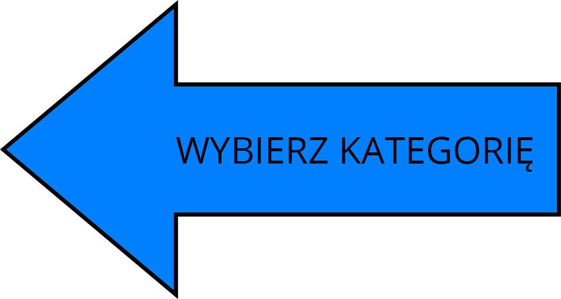
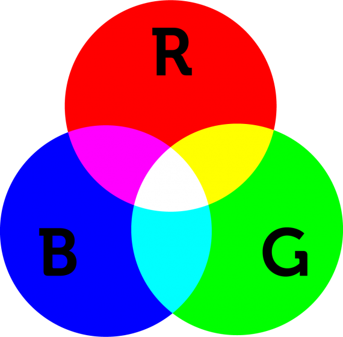
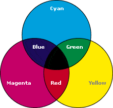

Podstawowe pojęcia grafiki
Barwa
Wrażenie psychiczne wywoływane w mózgu, gdy oko odbiera promieniowanie elektromagnetyczne z zakresu widzialnej części widma fal elektromagnetycznych
Gamut
Zakres kolorów, jakie może obrazować dane urządzenie.
Barwy chromatyczne
Wszystkie kolory (oprócz czerni, bieli i wszystkich szarości), w których można wyróżnić dominantę, choćby niewielką, jakiejś barwy.
Barwy achromatyczne
Wszystkie kolory nie posiadające dominanty barwnej. (biały, czarny i wszystkie szarości)
Barwy proste
Otrzymywane z rozszczepienia światła białego.
Barwy dopełniające
Pary barw połączone ze sobą w równych proporcjach.
Odcień
Najbardziej charakterystyczna cecha wrażenia barwy chromatycznej, nazywan potocznie kolorem.
Jasność
Właściwość powodujące, że przedmioty zdają się zatrzymywać lub odbijać większą lub mniejszą ilość padającego światła.
Nasycenie
Cecha odpowiadająca za ocenę udziału dominanty we wrażeniu ogólnym. Różnicuje barwy nasycone i nienasycone, lokując konkretne wrażenie barwne pomiędzy progiem początkowym sposptrzeżenia barwy przez oko, a progiem bólu, związanym z jej jaskrawością.
Modele barw
Model RGB

RGB - jeden z modeli przestrzeni barw, opisywany współrzędnymi kartezjańskimi. Nazwa pochodzi od liter barw: Red Green Blue
Wykorzystuje mieszanie addytywne, polegające na mieszaniu wiązek światła w podstawowych kolorach (RGB) Np. czerń(RGB) = 0,0,0; biel(RGB) = 255,255,255
Zapis RGB stosuje się w plikach graficznych i html.
Model CMYK

CMYK - kolejny model barw, składający się z 4 podstawowych kolorów Cyan, Magenta, Yello i Black. Wykorzystuje mieszanie substraktywne.
Model CMYK stosuje się w drukarkach i kopiarkach.
Grafika rastrowa
Prezentacja obrazu za pomocą pionowo-poziomej siatki odpowiednio kolorowanych pikseli na monitorze komputera, drukarce lub innym urządzeniu wyjściowym.
Emotikon w lewym górnym rogu przedstawia pixmapę RGB. Każdy kwadrat powiększenia prezentuje jeden piksel emotikona. Kolejne powiększenie pokazuje trzy piksele, których kolory wynikają z połączenia składowej czerwonej, zielonej i niebieskiej koloru.
| Formaty plików |
| używające kompresji stratnej |
JBIG, JBIG2, JNG, JPEG, JPEG LS, JPEG 2000, JPEG XR, DjVu, TIFF, WebP, WMF |
| używające kompresji bezstratnej |
APNG, BMP, GIF, LWF, MNG, PCX, PNG, TGA, WMF |
| bez kopmpresji |
BMP, DNG, PNM, PSD, RAW, TGA, TIFF, WBMP, WMF, XCF, XPM |
Najpopularniejsze programy do edycji grafiki rastrowej
Grafika wektorowa
Jeden z dwóch podstawowych rodzajów grafiki komputerowej, w której obraz opisany jest za pomocą figur geometrycznych (w przypadku grafiki dwuwymiarowej) lub brył geometrycznych (w przypadku grafiki trójwymiarowej), umiejscowionych w matematycznie zdefiniowanym układzie współrzędnych, odpowiednio dwu- lub trójwymiarowym.

Podczas powiększania obrazu rastrowego będzie w końcu widać poszczególne piksele, natomiast podczas powiększania obrazu wektorowego będzie widać ostre kształty figur geometrycznych, z których obraz jest zbudowany.
| Formaty plików |
| 2D |
AI, CDR, EPS, SVG, SWF, WMF |
| 3D |
DXF, DWF, DWG, STL |
Najpopularniejsze programy do edycji grafiki wektorowej